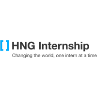

I am a highly practical and resourceful individual, driven to uphold ethical standards while delivering top-notch output. Known for paying attention to details and having an analytical and creative mindset. An effective team player and self-starter as well as possessing the ability to communicate on all levels. Particularly interested in information technology and problem solving. I am seeking for a challenging career with a progressive organization that provides an opportunity to effectively utilize my skills and abilities in contributing meaningfully towards the growth and sustainability of the organization.
Education

HNGi8 x I4G
August 2021 - present
Frontend web development
April 2021-June 2021
Frontend web development
2011-2016
Bachelors of Technology in Biochemistry
Second class honors, upper division (3.96/5.00)
2004 - 2010
West Africa Examination Council